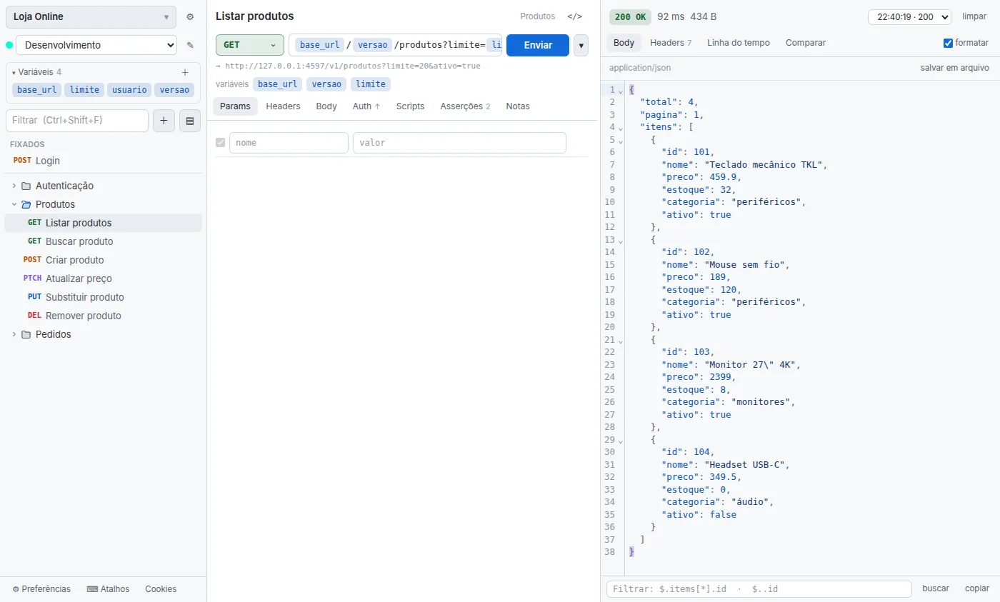
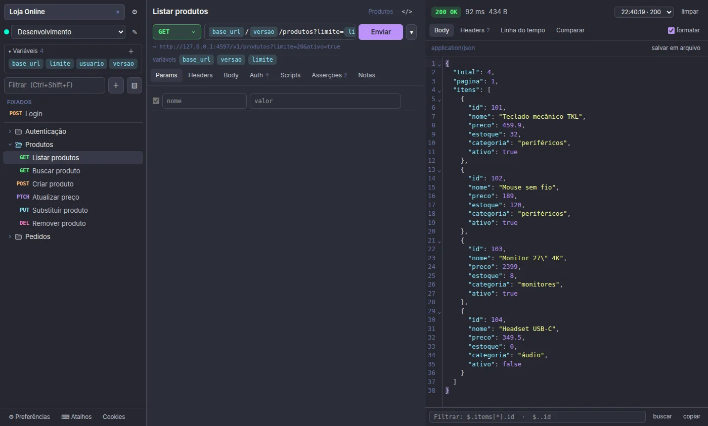
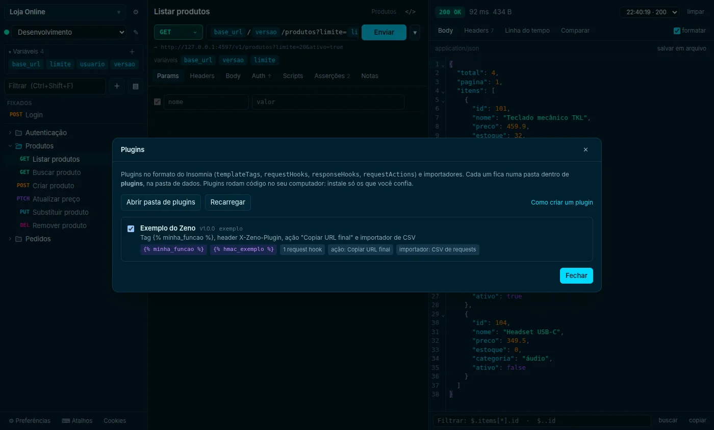

One screen, no tabs
Sidebar, request and response. Clicking swaps the content; nothing piles up. Command palette with Ctrl+P.
One screen, no tabs. Collections as YAML files you version in git, secrets encrypted with your OS keychain and direct import from Insomnia. Built in Go, lightweight, for Linux, Windows and macOS. Open source, local-first, no account.
Ubuntu, Debian and derivatives · any distro with AppImage


zeno run
Made for people who test APIs all day: keyboard-fast, easy to version and no surprises.
Sidebar, request and response. Clicking swaps the content; nothing piles up. Command palette with Ctrl+P.
Each request is a readable file in your folder. Review it in a PR, edit it in your favorite editor, and the app reloads on its own.
{% response %} grabs a token, header or field from another request and only resends it when the value expires.
Passwords and tokens encrypted with AES-256-GCM, key stored in the OS keychain (gnome-keyring/KWallet, DPAPI, Keychain). The YAML is safe to commit.
Pre- and post-request JavaScript, compatible with Insomnia and Postman, plus no-code checks.
Run entire folders with CSV/JSON data and a JUnit report, in the app or with zeno run in CI.
The request exactly as it was sent, every redirect, DNS, TLS, wait time and the server certificate.
20 languages and 37 libraries, highlighted like in an IDE, with variables and tags already resolved. From cURL to Rust.
Workspace inside the project repo: per-request status, diff, commit, pull, push and branches.
GraphQL with schema-based autocomplete, WebSocket, live Server-Sent Events and gRPC via reflection or .proto.
Every flow, browser login and automatic token refresh. Proxy, custom CA and client certificates (mTLS).
Save a response as an example and start a local server that answers every route in the workspace with it.
Variables show up as badges in every field and editor. Type {{ and pick from the list, with value and source. Click a badge to see where it comes from, edit it or move it to another level.
uuid, timestamp, faker, hash, base64, prompt…
Use the login token across a whole folder. The {% response %} tag has a visual editor with a value preview and decides when to resend: never, when there's no history, when expired or always.

Put grpc:// or grpcs:// in the URL, click Discover and pick the method. The message is JSON, with an example generated from the schema; headers become metadata and auth works just like HTTP.
.proto file
The GraphQL editor fetches your API's schema and completes fields and arguments. ws:// URLs open a WebSocket connection with a message log, and text/event-stream responses show each event as it arrives.
{{ variables }}
Formatted JSON filtered with JSONPath or XPath, search with Ctrl+F, rendered images, PDF and HTML, and 50 MB responses without freezing.

The same generator as Insomnia, with 20 languages and 37 libraries: cURL, HTTPie, fetch, axios, Python requests, Go, Java, C#, PHP, Ruby, Kotlin, Swift, Rust, PowerShell… With per-language syntax highlighting and 2-space indentation.
{{ variables }} as referencescurl into the URL and the request builds itself
Command palette with fuzzy search across all workspaces, Insomnia-style shortcuts (customizable) and import of your custom keybindings.

Click Sign in with GitHub, authorize in the browser and push your workspaces to a private repository of your own. Pull them on another machine with one click. No Zeno server in between.

TOTVS, Aura Dark, Monokai, Synthwave '84, Dracula, One Dark, Nord, Tokyo Night, Catppuccin, Gruvbox, Solarized, Night Owl, GitHub, Rosé Pine, Palenight and more. Switch instantly, with a preview.



Same format: templateTags, requestHooks, responseHooks and requestActions, plus importers. Each plugin runs isolated with a time limit; if it breaks, it shows up disabled and the app keeps going.
module.exports.templateTags = [{
name: 'my_function',
displayName: 'My function',
args: [{ displayName: 'Name', type: 'string' }],
run(context, name) {
return `Hello, ${name}!`
}
}]
zeno run runs a folder or the whole workspace, with an environment, per-iteration data, extra variables and a JUnit report. It exits with a non-zero code when something fails.
$ zeno run "Loja Online" Produtos --env Produção --junit relatorio.xml
✓ GET Listar produtos 200 109 ms
✓ status < 300
✓ tempo (ms) < 500
✓ POST Criar produto 201 72 ms
✓ status < 300
✓ tempo (ms) < 500
✗ DELETE Remover produto 404 45 ms
✗ status < 300 — valor: 404
Produtos: 3 request(s), 2 ok, 1 com falha · 6 teste(s), 1 falharam · 226 msDownload the package for the latest release. On first launch, import from Insomnia or create a workspace.
$ sudo apt install ./zeno_amd64.deb$ sudo dnf install ./zeno.x86_64.rpmRun the installer. The app isn't signed yet: if SmartScreen warns you, click More info and then Run anyway. There's also a portable .zip version. With Scoop: scoop bucket add zeno https://github.com/chmenegatti/scoop-bucket and scoop install zeno.
Open the .dmg and drag Zeno to Applications. macOS blocks the first launch (the app isn't notarized): in System Settings › Privacy & Security, click Open Anyway. With Homebrew: brew install --cask chmenegatti/tap/zeno.
$ chmod +x Zeno.AppImage
$ ./Zeno.AppImage$ git clone https://github.com/chmenegatti/zeno
$ cd zeno && npm install
$ npm run dev # Go 1.26+ and Node 22+